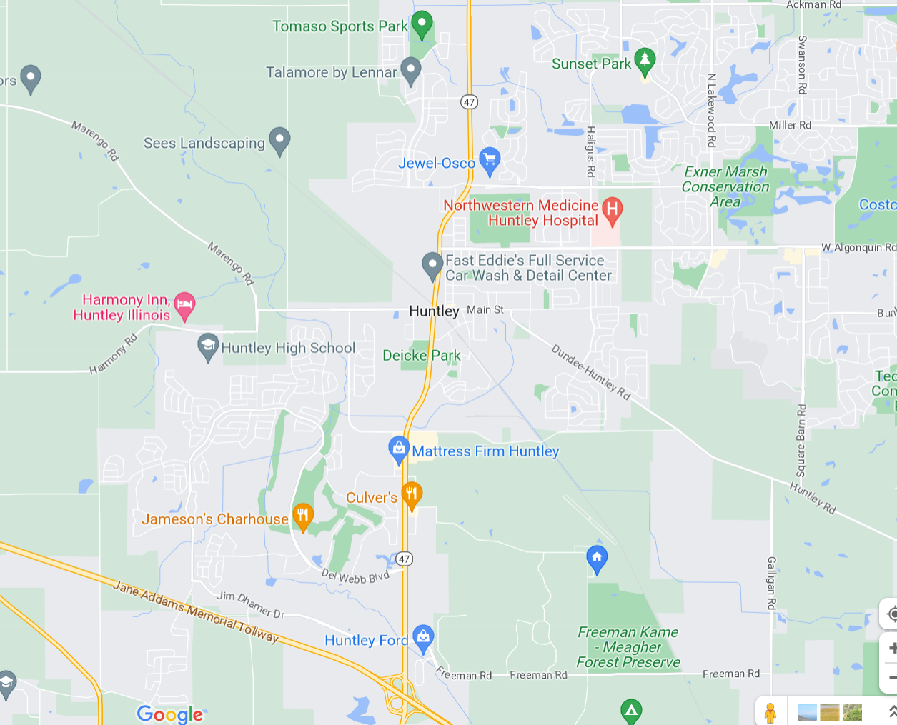

Hello! I am Mike Brehm.
I'm a software engineering leader that has held software developer, manager and director roles over the course of my career. But, the part of my career that I really
enjoy is coding -- when I get the time that is.
The current web technologies have advanced significantly while I've been busy leading and running organizations. So, I am now enrolled in a coding boot camp while I'm between gigs. And, I am really enjoying the formal training on HTML, CSS, and JavaScript.
But, there are still more things to learn and I can't wait. I'm looking forward to getting my hands on React, Node.js, Express and PostgreSQL.
Huntley, IL
This is where I live. Huntley, IL is a small town town (exurb) with a population of about 28,000 people. I've lived here for the past 20 years and have come to love it.
During that time, the town has grown substantially in population, services and stores. The main drive through town is Rt 47. There wasn't much there 20 years ago. But, now the street is lined with the conveniences we've all come to expect (i.e., Walmark, McDonald's).
Loving this area was a stretch at first. I grew up in Chicago where the nights are always lit by streetlamp with stores and restaurants everywhere. Dark nights were something to get used to to. But, the night view of the stars was wonderful.

My Coding Passion
It all began for me during Junior High. I was taking a computer programming course for kids at a local community college. Why? I was fascinated with the computer sales displays at Radio Shack.
Yes, I was the geek that would drop to a command prompt to edit some BASIC code on the display model and run it in a loop. It was the typical...
10 Print "Hello World"
20 Goto 10
Then, a blockbuster movie hit the theaters that completely sealed the deal. It was the movie War Games starring Matt Broderick. I loved this movie then, and I still enjoy it today. This movie fueled my fascination and my passion for all things computers and coding. I've never been the same since.
Teams Are Fun!
I always prefer to work on a team. It's a very rewarding experience when team members holds each other up. I personally always appreciate a 2nd set of eyes when I'm stuck, or a really good code review where I walked away knowing more than I did before. And,
every now and then I'm able to help someone else along too. That's the most rewarding part. Then, there's all the bonding and camaraderie from late nights and grabbing dinner together. I wouldn't replace those memories for anything.
Some of my Interests
Here are some of my top interests. They are listed in no particular order. I love them all. Just depends on my mood.
- Travel!
- Road trips
- Cruises in the Carribean
- Exploring Scenic Wonders
- Learning in Historic Places
- Trying New Restaurants
- Visiting New Cities
- Anywhere that's warm
- Going to the Movies
- Reading a Good Book
- Working in My Yard
Favorite Fast Food Places
Here is a list of my top 10 favorite fast food options. They are ranked from 1 to 10, with 1 being the absolute best!
- Honey Butter Chicken located in Chicago (sorry, not a chain)
- Beef Shack
- Culver's
- Burger King
- Wendy's
- Chipotle
- Arby's
- Chick-fil-A
- Popeye's Chicken
- Shake Shack